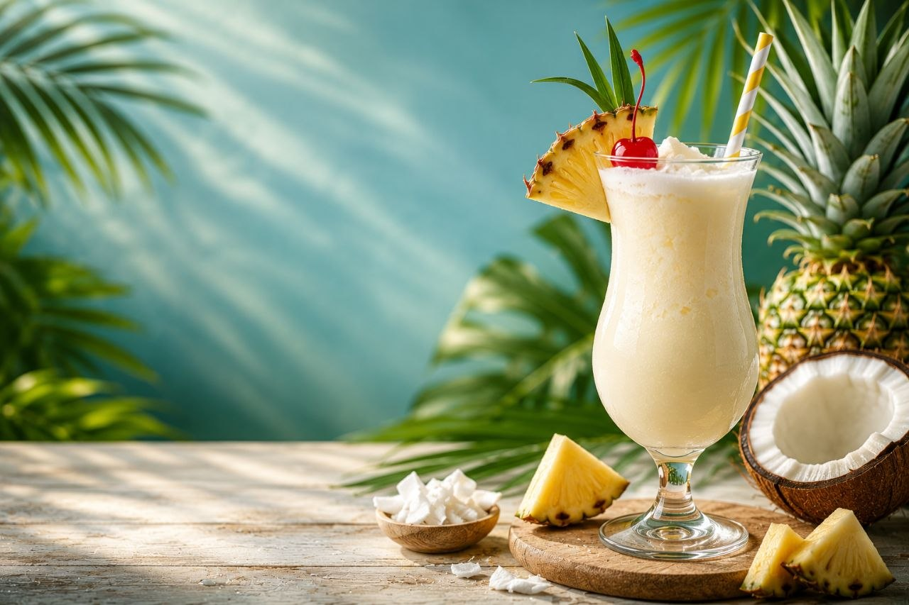

A creamy trophical drink blended with pineapple and coconut for refreshing escape.
220 kcal
Easy
5 mins
0 mins
Pour the pineapple juice, coconut cream, sugar (if using), and ice cubes into a blender.
Blend for 30–40 seconds until the mixture becomes smooth and creamy.
Pour the blended drink into a chilled serving glass.
Decorate with a pineapple slice, a maraschino cherry, and fresh mint leaves.
Place a straw in the glass for easy sipping.
Serve immediately and enjoy your creamy tropical Piña Colada.


Try delicious recipes only on Flavora.